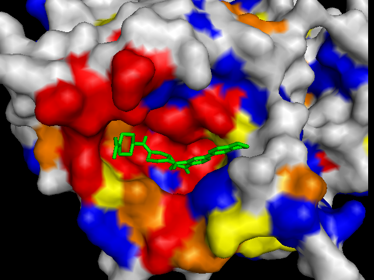
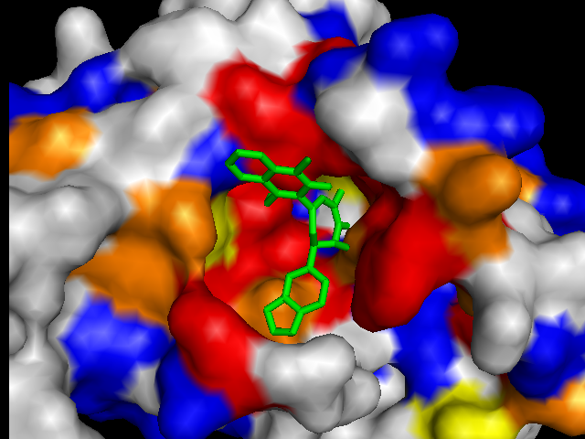
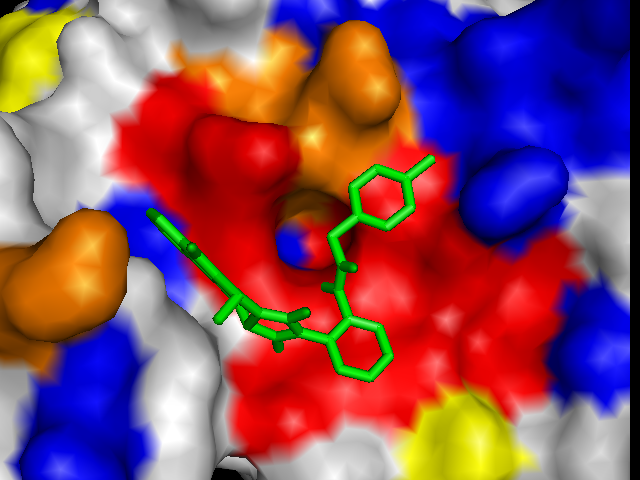
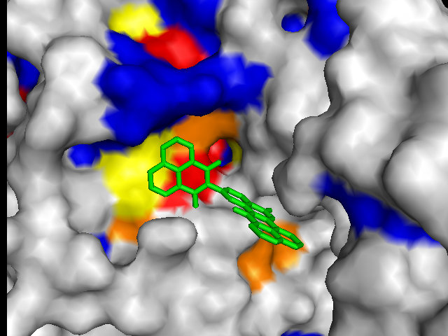

|
Ligands tend to bind near known active sites and/or conserved residues.
For each protein, the top scoring ligands docked close to very highly conserved residues (red). However, the search space used by AutoDock Vina was limited and centered on the most highly conserved region. To validate these results, we also used Vina to dock a set of ligands in a search space centered on an area characterized by low conservation. These results were somewhat suprising. |
|
|  |  |
| (a) FtsZ: -12.1 kcal/mol | (b) CoaD: -10.2 kcal/mol |
|---|---|
|  |  |
| (c) YwtF: -9.1 kcal/mol | (d) RacE: -7.7 kcal/mol |